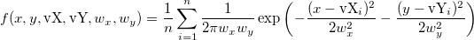
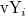
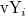

2Dカーネル密度グラフは、確率分布関数のノンパラメトリックな手法のカーネル密度推定をベースにした、散布図の平滑化色濃度表現です。密度推定の目的は、データの有限標本をとり、データ点がない場所を含むあらゆる場所で、根底にある確率分布関数を推定することです。カーネル密度推定では、各データポイントの寄与は、単一ポイントから周辺の範囲に平滑化されます。この平滑化密度グラフは、散布図の平均傾向を表示します。
2D密度推定グラフを作図するには、

|
入力データ |
入力データを指定します。 |
|
設定 |
|
|
密度推定データ |
グラフのために計算されたデータを保存する場所を設定します。 |
|
表示データ |
表示する散布図のデータを保存する場所を指定します。表示するポイント数が0出ないときに使用できます。 |
カーネル密度推定は、散乱した点の密度を推定するノンパラメトリック手法です。密度推定の目的は、既存の散布点から、データが観測されない場所を含むあらゆる場所で基礎となる確率密度関数を推定することです。カーネル関数は、データムを中心に作成されます。これにより、カーネルがデータムに関して対称になります。カーネル密度推定により、データポイントの寄与が平滑化され、データポイントの密度の全体像が得られます。

XYグリッドを定義するカーネル密度の計算手法を指定します。
密度の値は、以下の式に基づいて計算されます。

ここで、n はベクトルvX または vY の用ぞの数で、 はベクトルvXのi番目 の要素、 は、ベクトルvYのi番目 の要素です。
はベクトルvXのi番目 の要素、 は、ベクトルvYのi番目 の要素です。 と は、最適な帯域幅の値です。
と は、最適な帯域幅の値です。
2Dカーネル密度の正確な推定値の近似により密度計算を高速化します。
最初の2Dビン化が（x、y）ポイントで実行され、ビンカウントの行列を取得します。 次に、2D高速フーリエ変換を使用して、各グリッドの密度値を計算するための離散畳み込みを実行します。
密度値の4乗根は、密度スケールをカラースケールにマッピングするために計算されます
線形拡散プロセスに基づいて帯域幅を計算します。
wx およびwy の推定は、単純に以下のようにして計算されます。


ここで、n は、ベクトルvXまたはvYの大きさで、 、
、 はそれぞれデータセットvX、vYのサンプル標準偏差です。
はそれぞれデータセットvX、vYのサンプル標準偏差です。
計算方法を指定して、密度画像に重ねるポイントを決定します。
このオプションを選択すると、ポイントのカーネル密度は、定義されたXYグリッドの密度行列での補間により計算されます。元データが大きい場合は、このオプションを選択すると処理速度が大幅に向上します。
このオプションを選択しない場合、密度の値は、正確な推定手法によって計算されます。